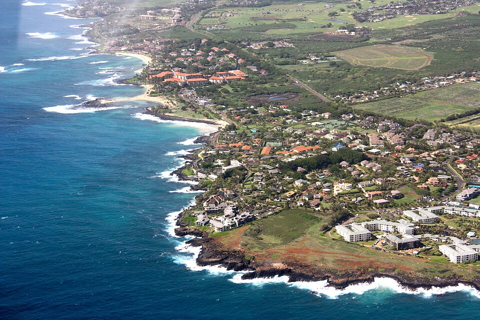

Poʻipū
Place: Poʻipū, Kauaʻi
Type: Coastal community / resort district / cultural landscape
Story it tells: A South Shore community whose name reflects the crashing surf while preserving one of Hawaiʻi's most important surviving Hawaiian cultural complexes at nearby Kāneiolouma.

Poʻipū occupies a sunny stretch of Kauaʻi's South Shore between Kōloa and Māhāʻulepū. The name Poʻipū is commonly translated as "crashing waves" or "covered by sea spray," reflecting the powerful surf that pounds much of the area's rocky coastline. While today it is one of Hawaiʻi's best-known resort destinations, the landscape has supported Hawaiian communities for centuries.
Historically, Poʻipū formed part of a productive Hawaiian ahupuaʻa that combined agriculture, aquaculture, and fishing. Freshwater flowing from Waikomo Stream was carried through an extensive network of ʻauwai (irrigation ditches) that supplied loʻi kalo, sweet potato fields, sugarcane, bananas, and other crops across the surrounding plain. Offshore reefs, fishponds, and canoe landings connected the community to the rich marine resources of Kauaʻi's south coast.
At the heart of this landscape lies Kāneiolouma, one of the island's most significant archaeological sites. Occupied since at least the fifteenth century, the 13-acre complex contains the remains of heiau, house platforms, fishponds, agricultural terraces, and the sacred Waiʻōhai spring. The site is perhaps best known for preserving what many scholars believe to be Hawaiʻi's only intact Makahiki sporting arena, where athletes gathered to compete in wrestling, spear throwing, boxing, and other contests during the annual season honoring the god Lono.
The modern wooden kiʻi standing tall at Kāneiolouma represent the four principal Hawaiian gods: Kāne, Lono, Kū, and Kanaloa. Installed as part of ongoing cultural restoration, they overlook a landscape that is once again revealing its ancient foundations after decades hidden beneath overgrowth. Hui Mālama O Kāneiolouma continues restoring the complex, reconnecting the community with one of Kauaʻi's most important cultural treasures.
Poʻipū changed dramatically after the establishment of Hawaiʻi's first successful commercial sugar plantation in nearby Kōloa in 1835. Sugar fields gradually replaced almost all of the traditional agricultural system, while immigrant laborers from around the world reshaped the surrounding communities. During the second half of the twentieth century, tourism replaced sugar as the region's dominant industry, and Poʻipū evolved into one of Hawaiʻi's premier resort destinations.
Despite that transformation, Kauaʻi chose a different path from many resort areas elsewhere in Hawaiʻi. Strict building height limits keep structures below the height of mature palm trees, preserving open views of the coastline and preventing the skyline from becoming dominated by high-rise hotels.
Today, Poʻipū blends world-famous beaches with centuries of Hawaiian history. Few places on Kauaʻi better demonstrate how cultural preservation and modern recreation can exist side by side, allowing visitors to enjoy the coast while discovering the remarkable legacy of Kāneiolouma and the thriving Hawaiian community that once centered around it.